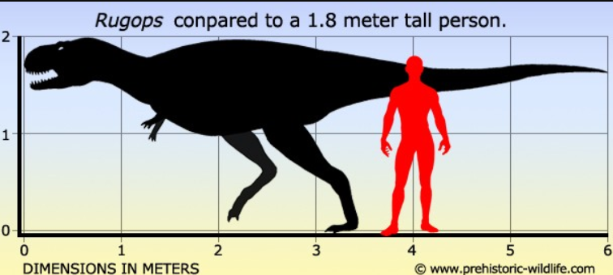
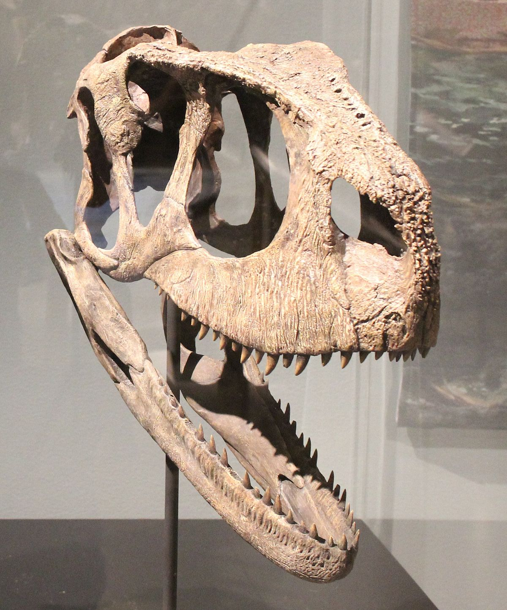
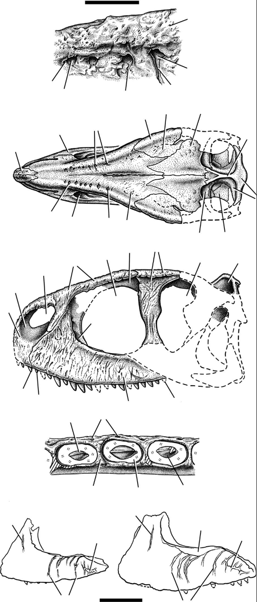

Size & Range
The size range of the rugops is a length from 4.4 to 5.3 meters with a weight of 410 kilos or 900 pounds. They were on the smaller side of dinosaurs. Some are compared to the height of a human or a little bigger. These dinosaurs were like a pet size of a T-rex. They had around the same look and little arms. Their arms proposed little to no importance.
Habitat
They lived in a terrestrial habitat. Terrestrial means on land, like forests, grasslands, deserts, shorelines, and wetlands. Their fossils were found near the Niger in Africa. The Niger was home to many dinosaurs at the time. It offers different habitat types in one area.

Identification
They are known and identified by their mostly complete skull. The skull is said to be the only fossil and evidence they can find of the Rugops existence. The skull is relatively delicate and has a crest of some kind. The skull can tell scientists a lot of details of how a Rugops lived its life. The delicacy of the skull suggests that they were scavengers and not an attacking type. The skull also bore armor and or scales.
Feeding & Diet
The Rugops were carnivores. Many think that they weren’t particularly violent and their hunting tactics were different because of their skull structure and adaptations.
Behavior and Adaptations
Rugops were well-suited for hunting on smaller vertebrates, as well as possibly scavenging larger carcasses when the opportunity came.
Life Cycle & History
There is no other information about the life cycle of a Rugops dinosaur besides they lived in the late cretaceous period and the only evidence of fossils found is a single skull that is almost complete. There was not much information on their breeding behaviors. When they give birth they lay eggs.
Preditors
The Rugops shared a habitat with several much bigger dinosaurs which led to them forming packs of 5 to 10 and living together for safety. At the time they lived with the Spinosaurus, the Carcharodontosaurus, and Sarchosuchus. They might have looked much scarier than they really were. They had a pattern or design on their skin giving it a “warpaint” look that scared other dinosaurs that could be potential predators that were much stronger.
Discovery
Time period
The dinosaur was discovered by Dr Paul Sereno in the year 2000 and I believe they patented the name in 2004. Found near the Niger Republic. Dr. Paul is a paleontologist. He is a professor at the University of Chicago. It lived in the late Cretaceous period. It lived with several other, much larger carnivores such as the Spinosaurus, Sarcosuchus, and Carcharodontosaurus.
Fossil Records & Description
The skull had armor or scales as well as some type of texture. Many other bones had blood vessels. This made Dr. Paul Sereno thinks that the dinosaur was not built for bone crushing or fighting. The dino seemed more of a scavenger according to its skull. The skull had two rows of seven holes and the purpose of them is still unknown. The Dr thinks that a crown or horn of some type was connected to these holes and held it up. They are also suspected of having weak jaws and teeth. The only recovered fossil of the dinosaur is the skull.
